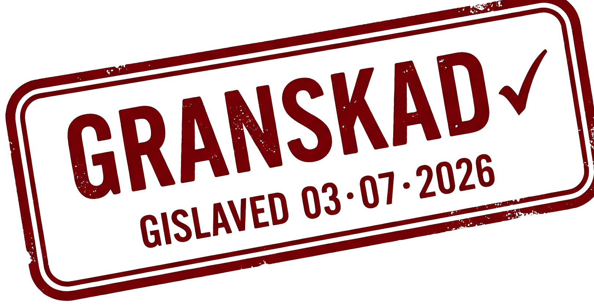

Föreningsguiden — sidhuvud & ordmärke
Byggt ur 2b-skavet: textfritt grönt kompass-emblem som parar med det tvåtonade ordmärket (grönt "guiden"), och en monospace-statusremsa som visar källa + senast avläst — färskhet som synlig förtroendemekanik. Oxblod hålls kvar enbart för granskningsstämpeln, grönt är märkesfärgen.


2a med föreningsarkivets skav
Samma tillgängliga stomme, men med en analog byråkrati-textur som ger friktion och gör det till vår sak: en granskningsstämpel i oxblod-bläck (lätt sned), diarienummer i monospace, en "riv av"-perforering och ledger-streckade rader. Kontrasten crisp sans ↔ ojämnt stämpelbläck är poängen. Jämför med 2a nedanför.
Driftbidrag för föreningar
Årligt driftstöd till ideella föreningar med barn- och ungdomsverksamhet i bygden.
Högkontrast — med föreningsliv
Samma tillgänglighetsstomme som 1c (Atkinson Hyperlegible, hög kontrast, tjocka kanter, färg + text — aldrig färg ensam). Personligheten kommer från en grön föreningsaccent, kategoritaggar, en bevaka-funktion, social proof från orten och varmare rundade urgensmarkörer — inte från dekor. Jämför med original nedanför (1c).
Tre riktningar för datakort + deadlinekalender
Alla tre sitter i "civil klarhet" — sans-typografi, en accent per vertikal via CSS-variabler, 16–18px brödtext, WCAG-signaler som aldrig vilar på färg ensam. Ingen parchment/koppar, ingen SaaS-gradient. Välj en så bygger tokendokumentet vidare på den. Referera i chatten med 1a, 1b eller 1c.
Driftbidrag för föreningar
Årligt driftstöd till ideella föreningar med barn- och ungdomsverksamhet.